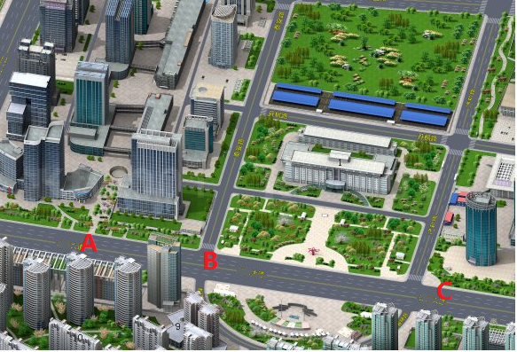
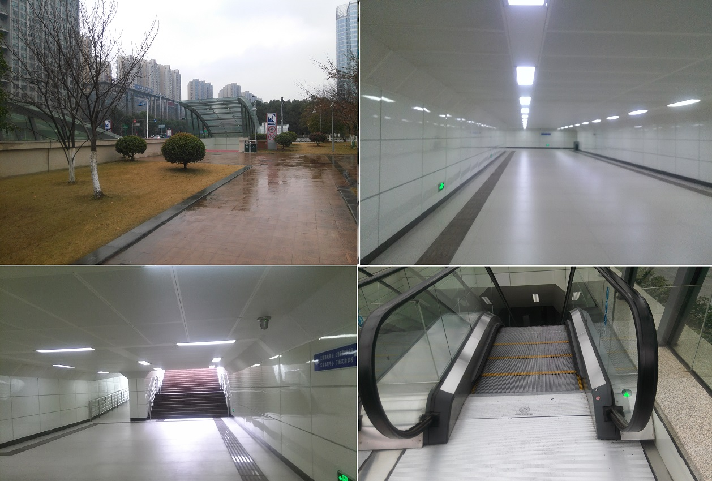
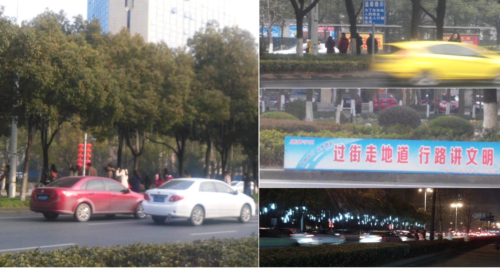
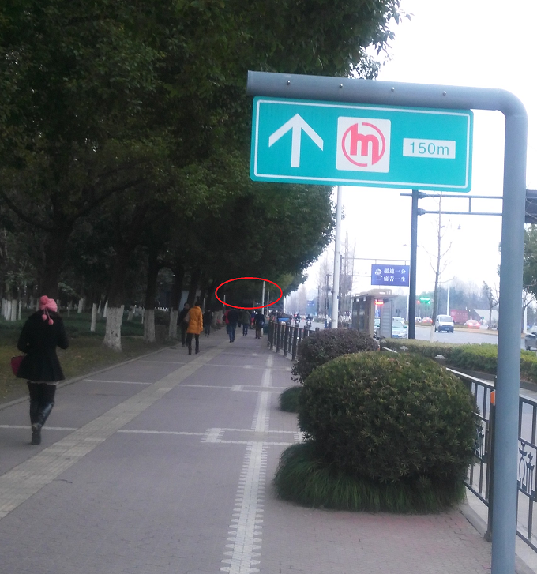
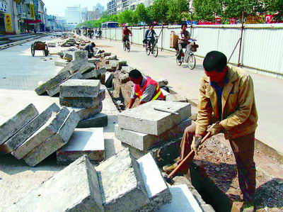

跨界看项目那些事儿
年底了，该总结了。例行的招呼几个项目负责人对几个项目执行情况进行总结，项目上中实践比较成功的，记录细节，评估其他项目借鉴的可能性；项目上存在的问题，重点一起剖析下。由表面现象，到深层次的原因，力图通过讨论或争论都能有一致的认识，形成改进。但希望是理解了改进，而不是被要求改进。为了更生动的说明自己的观点，作为主持人的笔者准备了一个大家都比较熟悉的例子，公司附近的一个工地上项目。居然发现效果很好，新鲜，生动，容易被大家理解和引起共鸣。也是，在批判自己的过程中，肆无忌惮的给第三方挑毛病的确是很爽的一件事情！笔者在进入软件这个行当之前干的就是在[铁路工地上干活][1]的，经常不自觉的把这两种项目拿来比较。虽然看上去是有点跨界，其实也差别不大，项目那些事儿无非就如何把一组人组织起来有效的完成一件事情，达到规划的目标，做出一个有用的东西。因此，存在的问题和问题产生的原因也差不多。
例子中的这个项目是公司附近大家吃饭下班都会路过的一个工地，位于某某高新开发区区政府广场附近。项目一部分是图中B处一个过街地下通道，另外一个是不远C处的一个地铁站。从位置上就能看出其地位来，算是这个核心片区的重点项目。这么一个形象工程、利民项目被拿来作为一个反面案例，自认有点惶恐，有点忐忑。
先看B处这个过街地下通道，严格意义上讲不上一个新项目，因为原来就有，这次虽然项目规模很大，工程持续时间很长，给周边大家的生活带来了挺大影响，但其实工程的性质就是对原有项目的完善。即做了个2.0版本，只是对1.0版本的升级。

2.0版本的最主要的需求当然就是1.0版本存在的问题。那1.0版本最主要的问题是什么呢？就是没人用。在附近生活了四年了，几乎没有见过几个个人使用过。那么2.0版本的主要功能是什么呢？
- 地下通道的地面和墙壁都进行了粉刷和重新整修，尽管原来那个版本因为几乎未被使用，也没有什么损耗。即对1.0版本的UI进行了全面改善。
- 在西北、西南两个出口的台阶楼梯边上增加了两部手扶电梯，用户体验更好了。
- 在四个出口处都增加了玻璃的顶棚，下雨这种异常情况也处理的更得体了。
- 四个出口周边增加了绿化和石凳，整个产品风格一下就小清新了。
- 在西北出口处增加了保安，现场对产品进行技术支持和运维。
那2.0版本做的这么多看着很漂亮的功能是否解决了1.0的问题呢？本山大叔说过“看疗效！”。遗憾的是，在完工的近半年里，笔者没观察到什么变化，每天早晚上下班时间最大的人流还是选择从图示的A处，鲜有人会绕道这边来。非要说带来的变化，这个落寂的爱民工程倒是使得这个新区的政府广场看上去一下子高档了很多。

费了很大劲做了一个没人用的产品，这个项目难被评价为一个成功的项目。为什么花了这么大的代价，大半年时间，做出的产品用户却不买账呢？这是我们总结中让大家来分析的，因为我们的项目中也曾经发上过至少两次同样的事情，虽然规模和时间没有这么夸张。原因无一例外就是需求没有搞清楚，详细说分两种，一种是没有搞清楚产品的目标用户是谁，另外一种是没有搞清楚目标用户需要什么。
这个项目的目标用户是谁呢？在该项目往西一百多米的A处。马路南面和北面正对着是本区域最大的公交站，北面是该新区最繁华的商业步行街Star Road，是商场和写字楼聚集地。在1.0的时代，每天早晚上下班的时候总有那么一批人一大拨一大拨的从马路这边匆匆的冲到马路对面，先是穿过车流，然后来到中间绿化带，跨过环卫大妈们一遍一遍重铺过的草地，拉起的栏杆等各种障碍，再穿过另外一边的车流，艰难上岸，再冲进一个个大楼里。2.0后，可能随着新区的发展，人流量更多了，可怜的环卫大妈仍绞尽脑汁在和这些写字楼中的白领们斗争着，草坪踩了又种，种了又踩；隔离带由绳索升级为铁栏杆，再由铁栏杆升级为“过街走地道行路讲文明”的告示牌依然不能阻止上班族们在上下班时从写字楼和马路对面的公交站之间之间穿行。看上去项目的目标用户正是这些从城市的各个角落赶到这个公交站，为了掐着点赶着去写字楼打卡考勤，早点都要路上边走边吃，舍不得绕半个街区的时间来使用这个便民项目，冒着风险两次穿过车流，顶着巨大的道德压力跨过“过街走地道行路讲文明”的可怜的小白领们。他们是这个项目的目标用户，但却在项目立项的时候被无情的忽视了，不管是1.0版本和2.0版本。

再来看下提供的是不是用户期望的功能。我们来看看该项目中完成的五大feature，前四个无一例外都是用户体验上的改善。UI更干净了，操作方式做的更智能便利了，异常处理做的更完善了，整个产品风格都变得更清新了。那么用户的实际需求是不是对体验不满呢？是不愿意走楼梯而愿意选电梯，是因为下雨天漏雨而不愿意使用吗？是嫌这边没有花花草草才去马路中间的绿化带里寻找去了？显然都不是，观察到用户的基本需求仅仅是能便利、节省时间的安全的通行，比让穿过马路方便安全就行。如果这个基本需求不能满足，体验上的改善很难打动他们改变主意。
在一个个分析2.0的功能时候，有人提出了不同认识，那就是功能5中提到的不是技术支持，因为通过观察这些人从事的不是引导搀扶小老弱病残这样的支持类工作，也不是配合维护电梯通道等的维护类工作，而是把B处行人拉到楼梯口通行，这应该算是产品推广性质的工作吧。配合A处各种生物、物理、精神路障，B处活人路障是铁了心要用大禹前辈的治水方式来把人“堵”到通道中去。为了产品推广还真是蛮拼的！但直到今天只有B处零星的行人是被堵成功了，A处的真正目标用户一点变化也没有。
上面两个问题在我们软件项目中也是很容易碰到的，分析我们曾经出问题的两个项目底层的原因正是这样。项目立项的时候要先明确目标用户，搞清楚谁对这个产品有需求，这个产品做好了给谁用，这看似是个基本原则。但实践中经常这个最基本的原则却经常被忽视。很多营销上噱头的东西经常压倒了对目标用户的分析成为我们考虑的重点。没有明确目标用户，就开始做需求开发，然后功能分解后就开工干了。最终做出的东西找不到人用也就不足为奇了。例子中这个项目很可能在1.0立项的时候根本没有考虑目标用户，只是要建成区政府广场一角的一个形象工程。天安门广场有个过街通道，咱也要搞一个，这是标配。至于给谁用谁来用先不考虑了。
另外一个问题存在的就更普遍，有一个在开发的产品中正不同程度的还存在着。就是当产品推广不力的时候，我们最容易想到的就是用户体验上改善，什么图表不漂亮了，页面色彩不美观了，UI风格不舒服了这些，而忽视了用户对产品功能最基本的诉求。做出这样的决策也不难理解，第一用户体验的问题较之产品功能更容易被发现，更容易被提出；第二，从开发人员角度来说，用户体验的修改较之底层功能调整代价和影响要小；第三，虽然不好意思说，但实际中却经常发生，提出用户体验的要求对项目组外的领导们技术和业务能力要求最低，最容易发挥影响力来指点。没有冒犯权贵的意思，但真的不排除 例子中这个2.0改造项目是某某大领导亲自批示的，除了这个项目外，整个区政府周边整体UI在浩浩荡荡的也在被翻新。我们经常嘲笑那个地方刚栽好的花毁了种草，刚种好了的草铲了铺路这样瞎折腾。却忘了我们项目中花了多少力气反复干把一个网页横的变成竖的，蓝色的变成绿色的这样的事情。
挑了毛病，那能建议个方案吗？其实也不难想，用户怎么用，就怎么提供产品呗。A处 是主要人流的地方，那在A处建一个过街通道即可。在讨论中有人在此基础上提出了另外一个方案获得了大家的积极响应。
看图上最右边标识C处是一个地铁站，是新区最大的地铁枢纽，一号线已投入使用，规划有其他线路在这里换乘。从现阶段的使用情况来看，从地下上到地面上出站的主要人流方向也是涌向左边的区政府和这个商业街区。有没有可能把地铁的出站口延伸到A处，则那个期待的过街通道就被复用为地铁出口。本来距离也不是很远，而且在Start Road步行街地下一层原本就是另一个步行街。那事情就变得非常简单，把地铁站和Start Road 的地下一条街打通，孤立的两个项目就被整合为一个项目了。
整合的优点是很明显的，这种设计其实是很成熟并且在大量被使用。延伸的通道可以增加很多商业，作为Start Road地下商业街的一个延伸，不评估购买力，单人流量延伸的这段就比原来的那段要多很多。项目B这样的原来就存在的小过街通道转型为地铁出口，可以直接出站到区政府。当然在A处公交站和Start Road马路两侧的增加的地铁出口，不仅可以解决此处大量人流的过街需求，还可以方便的完成此处公交和地铁的换乘，可以一路引导地铁出站的人很方便的到达商业街。最重要的是可以更方便的让大量来商业街和区政府这两处的外来人找到地铁口。
说到找地铁口，笔者在地铁开通的这一年里，不下十次的在区政府和Start Road周边被问到“请问地铁站在哪儿”，开始也非常好奇，不是有地铁标识了吗？老头老太太就算了，怎么看着大学生模样的也不认识标识。于是乘地铁时留意了下周边的标识，被这些工程师同行的杰作给雷到了。150M这个较实际距离偏大暂不说，你把它放在出口处的边上就有点疑问了。就因为我手里有一个150M的牌子和一个100M的牌子，我就分别两个方向目测下距离装好就行。我们做这样设计的时候有没有想过，在商业街、区政府主要人流量的地方需要引导用户的地方没有标识，而用户一路询问都看见地铁口的广告牌了，发现此处你杵着一个标识告诉我需继续往前再走若干米米。感慨我们这些工程师们做项目时候，“用户观点”总是挂在嘴边，但实施的时候工程师的思维还是根深蒂固。

回到两个项目整合的问题，这种整合方案其实不难想到。就这这个例子，我们这种干另外类型项目的人根据自己的背景都能指手画脚，施工的同行们一定也应该是考虑过的。这种方案在地铁站规划的时候一定作为一种方案被提出过。和我们软件项目一样，两个功能模块在设计初期，根据规划，先分开设计和开发，留好扩展的接口，在适当的时机进行整合。即使设计初期没有考虑到，两个功能完全不相干，分开设计和开发。在产品演变过程中，表现出了相关性，整合的必要出现了，也会在适当的时机进行整合。但实际中我们都有这样的经验，大多数时候这不是一个设计问题，而是一个执行的问题。
一般经验来说，当基于整体需求的评估，要做整体考虑方案，则越早越好。但实际执行中，单个模块工期的压力，整合带来的实施上的不确定性和潜在的风险，甚至两个项目原本不同项目组开发引起人员上的困难，都使得下决心“整”变得困难。一般会被冠以“时机不成熟，待下个版本解决”这样一次一次的拖下去。这个时候，考验的不是大局观，设计能力，而是执行能力。考验的不是智慧，而是的是勇气、魄力。拖下去的好处是当时安生，但把麻烦留给了以后。经常在上一个版本多一点努力可以完成的，在下一个版本需要费很大气力。尤其是接口部分，要么是丑陋、别扭的适配，要么就是大量推翻重写。就像这个项目一样，如果在地铁站规划中能扩展考虑到延伸方案，则一下解决了多个问题，而像现在这样独立的来做，只解决了部分问题，待到下期整合时，结合处上上下下的台阶斜坡，通道处拐弯转交这样的接口硬伤是避免不了。
夹生饭再下锅蒸熟了品质当然不如一贯的好，这是结果上看，从过程上看，这样工程执行需要付出更多的代价。付出的人力和时间成本虽然在当前版本中不会考虑，在下个版本中也会以正当的理由冠冕堂皇的被贴上 重构这样高大上的标签，项目方案洋洋洒洒，项目计划宏伟庞大，但实际上从整个项目来看是做了无用功，其实就是出现了返工。就像例子中这个项目一样，在一两年后如果要打通的时候，我们又会看到和今年上半年这里一样忙碌的工作场景，重新圈起来的工地上轰隆隆的的电锤杂碎的每个石子儿都是两年前同伴们的辛苦劳作。工程上这样修了又拆，拆了又修的案例最近几年经常见诸报端，我们这些在屋子里面做项目的人经常对这些工地项目的粗鲁做法嗤之以鼻，好像那些做项目的人是野蛮人，骂其瞎折腾。但却忘了其实很多时候我们更野蛮，这样的例子在我们自己项目中其实也不也一直在发生，从上层被折腾的UI，到底层被折腾的实现，从某个独立模块的实现方式，到两个模块间的接口方案，当然大部分我们可以理直气壮的讲这是经过充分的评估和讨论的，是改进，不是瞎折腾，但是其中有多少是真折腾，过程中参与其中的人有时候恐怕自己也判别不清楚，在我们这种总结会议上大家跳出来争论后才可能形成结论。只是我们这种折腾进行的比较隐蔽罢了，但其带来的浪费真的不见得比看到的我们的同行们在工地上砸的几块地砖，扒掉些混凝土影响小，代价少。

洋洋洒洒会议持续了两个小时，扯了很多。平时不允许这样浪费时间来开会，既然讨论的这么热烈，感觉讨论通了，尽兴了当然就也就理解了，达到目的了。很快会议纪要邮件就发出来了。一级标题如下：
- 搞清目标用户
- 理解用户根本需求
- UI好可增加颜值，但是功能好才是真的好。
- 做项目的要会想，但更多时候要会just do it。
- 项目规划和下棋一样，走着瞧，但尽量要多看几步，否则悔棋不易。
- 满满当当的项目规划和执行计划有时候是蒙老板的，有料没料要看是否厚道。
- 用户观点，挂在嘴边不够，应刻在脑门上，最好深一点，刻到骨头上。
当然每个抽象的观点下面都有详细展开，包括实际例子来说明，这个跨界的工程只是其中很小的一部分花絮素材，大部分还是说我们自己项目中实际的问题。比较散，有点乱，但都是有联系的。虽然纪要中是按照观点来展开的，但是如果按照涉及的项目来索引发现很少有一个项目仅存在一个问题。通过讨论，大家问题想通了想透了，最终改进也就有了前提了。做好明年的项目，争取少犯这些错误。
有心者在会议纪要上回复如下：“对例子中项目的诸多评价仅是一帮屌丝工程师学术讨论，个人观点，纯属YY，特此声明。”也作为本文的一个声明。